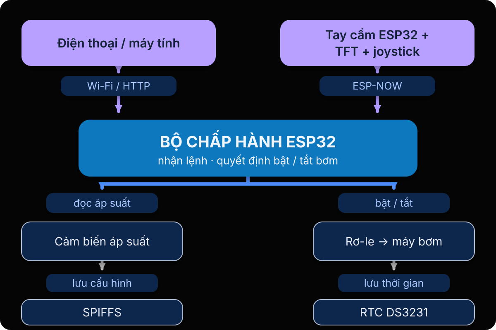
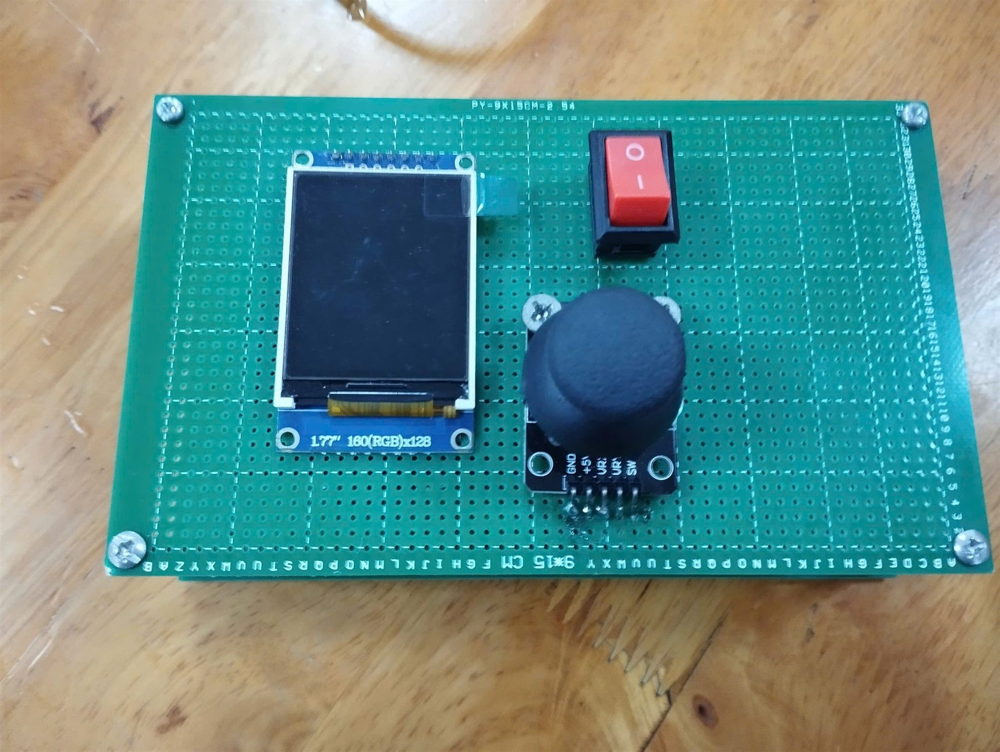
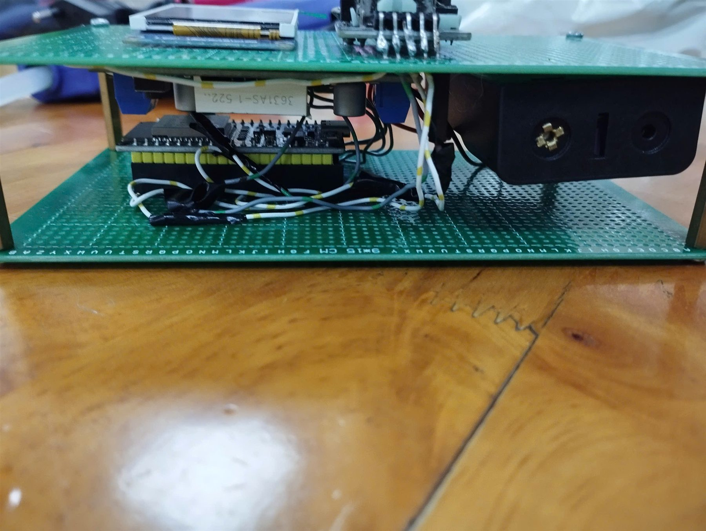

Project · Firmware complete, hardware testing in progress
AutoPump: Automatic Tire Inflation System for Cars and Motorcycles
Overview
AutoPump is an automatic tire inflation system made of an ESP32 handheld controller and an ESP32 actuator unit. The user selects the vehicle type, model and target wheel; the system looks up the recommended tire pressure, controls the pump, and shows inflation progress on a TFT display.
Key Features
- Vehicle type, model and wheel selection
- Recommended pressure lookup
- Automatic pump control
- Real-time progress on TFT display
- Status exchange between the two ESP32 boards over ESP-NOW
- Web interface hosted by the actuator for monitoring and control
My Role
- Team leader for the project
- Developed the ESP32 firmware
- Implemented ESP-NOW communication between the handheld controller and actuator unit
System Architecture

Video Demo
Project presentation: Automatic Tire Inflator for Cars and Motorcycles.
Project Photos



Results
The core firmware is implemented across the handheld controller and actuator unit. A user can choose a vehicle and wheel, retrieve its recommended tire pressure, and send commands to the inflator. The ESP32 boards exchange operating status over ESP-NOW, while the controller displays the inflation progress on its TFT screen.
The actuator also provides a web interface for monitoring and control. The firmware builds successfully, and the main software workflow is in place.